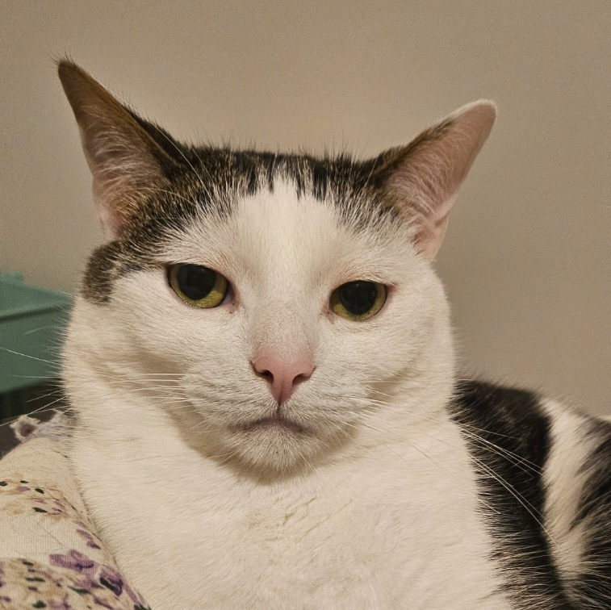
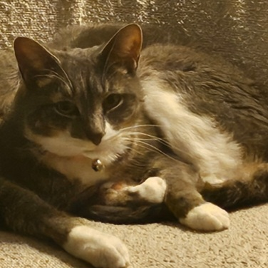
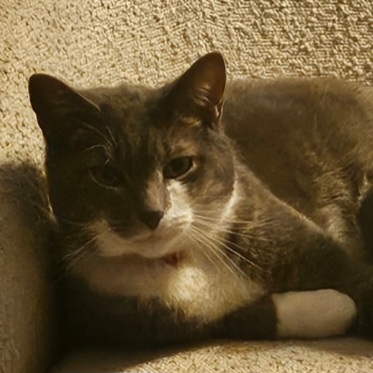
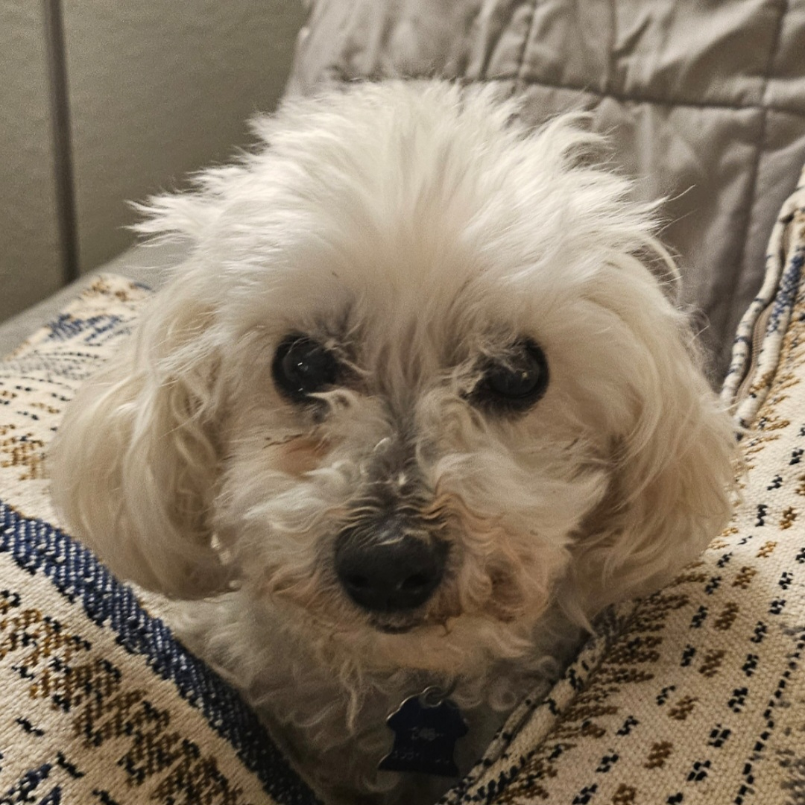

This is my cat, his name is Jayfeather and he's 6 years old. His favorite food is chicken and I got him when he was 7 weeks old back in late 2019. He's very loving and one of his favorite ways to play is with water coming out of a faucet.
This here is Alder, he's my sister's cat. We got him from a shelter when he was three months old, he's 5 years old now and still playful like a kitten.
Spotty is Jayfeather's biological brother from the same litter. He is my grandma's cat and he will try to steal any food he can get his paws on, no matter how much he eats.
Tippy, another of Jayfeather's biological brothers from the same litter, and almost exactly the same pattern and colors as Spotty. He's pretty chubby and loves to cuddle all the time.
He's my mom's dog, his name is Chance and is 14 years old. Chance is a toy poodle and he's surprisngly ok with wearing clothes when it's cold outside. He gets cold easily so he has a bunch of coats and sweaters to wear.
Click here to go to the home page. Click here for Team Exotic Pets.